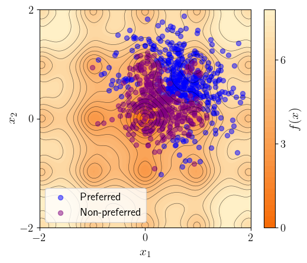
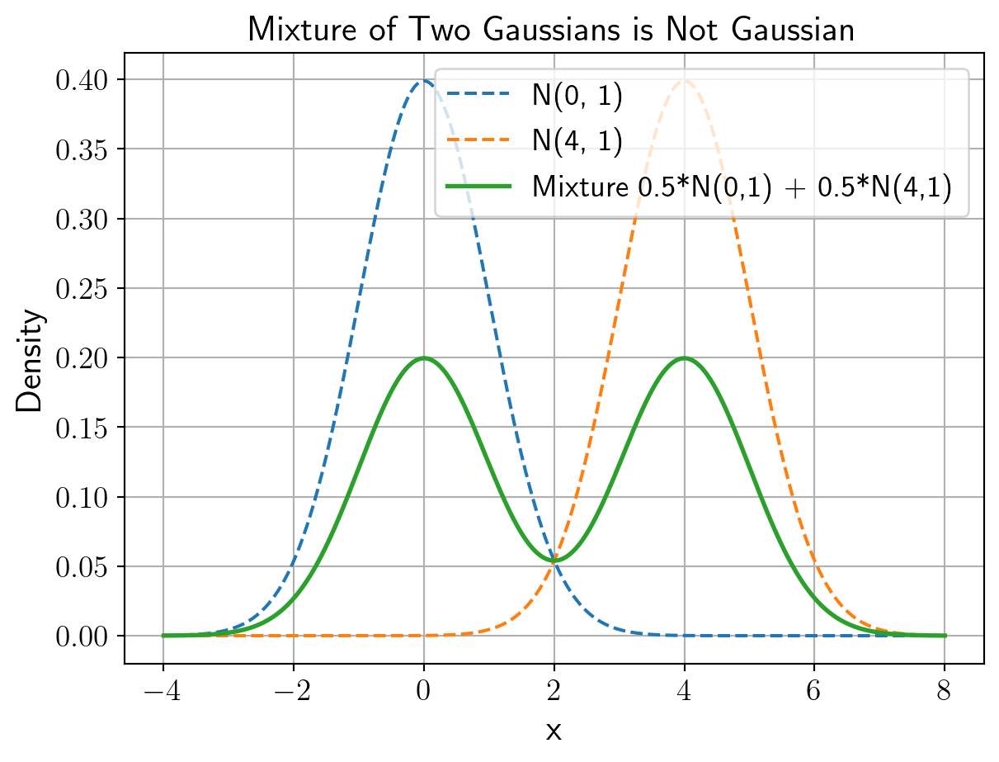

import numpy as np
np.random.seed(0)
def ackley(X, a=20, b=0.2, c=2*np.pi):
"""
Compute the Ackley function.
Parameters:
X: A NumPy array of shape (n, d) where each row is a n-dimensional point.
a, b, c: Parameters of the Ackley function.
Returns:
A NumPy array of shape (n,) of function values
"""
X = np.atleast_2d(X)
d = X.shape[1]
sum_sq = np.sum(X ** 2, axis=1)
term1 = -a * np.exp(-b * np.sqrt(sum_sq / d))
term2 = -np.exp(np.sum(np.cos(c * X), axis=1) / d)
return term1 + term2 + a + np.e1 Background
Fullscreen Part 1 Fullscreen Part 2
Intended Learning outcomes
By the end of this chapter you will be able to:
- Differentiate deterministic preferences from stochastic (random) preferences and justify why randomness is essential for modelling noisy human choice.
- Define and apply the Independence of Irrelevant Alternatives (IIA) axiom, explaining how it collapses the full preference distribution to an \(n\)-parameter logit model.
- Derive choice probabilities for binary comparisons (Bradley–Terry), accept–reject decisions (logistic regression), and full or partial rankings (Plackett–Luce) from a random-utility model with i.i.d. Gumbel shocks.
- Identify and compare the main types of comparison data (full lists, choice-from-a-set, pairwise) and map each to the underlying random preference distribution.
- Simulate preference data using the Ackley test function, and visualize how utility landscapes translate into observed choices.
- Diagnose two key limitations of IIA—population heterogeneity (mixture models) and the red-bus/blue-bus cloning problem—and motivate richer models with correlated utility shocks.
- Incorporate context features \(x\) into random-utility formulations to generalize learned preferences across environments, prompts, or tasks.
- Explain the identification issue in logit models and justify the convention of fixing one utility level (e.g., the outside option \(y_{0}\)).
This is a book about machine learning from human preferences. This first chapter is about generative models for human actions, in particular for comparisons. In classical supervised learning, comparisons implicitly arise for a trained model: If the logit of a particular output from a supervised learning model is higher for the label \(y\) than \(y'\) we would say that the model is more likely to produce \(y\) than \(y'\). While this introduces some amount of comparison on model outputs, it does not help us if the data is given by \(y\) being preferred to \(y'\), written \(y \succ y'\).
First, hence, we introduce stochastic preferences as a model of preferences. We then discuss the most important assumption made in stochastic choice, the Independence of Irrelevant Alternatives (IIA), and discuss its advantages and pitfalls. Chapters 1-5 will restrict to comparisons, including binary comparisons, accept-reject decisions, and ranking lists. Other related data types, such as Likert scales, will be considered in (chapter-beyond?).
1.1 Random Preferences as a Model of Comparisons
We start with a set of objects \(y \in Y\)—be they products, robot trajectories, or language model responses. We will consider models to generate comparisons that are orders. For realism, but also for mathematical simplicity, we will assume in this book that the set \(Y\) of objects is discrete and has \(n\) objects.
Comparisons may be random and are generated by random draws of (total) orders. (Total) Orders have two properties.
- First, for two objects \(y, y'\) either \(y \prec y'\) and/or \(y \succ y'\) must hold, an assumption called totality: Either \(y\) is weakly preferred to \(y'\) or \(y'\) is weakly preferred to \(y\).
- The second assumption is transitivity: if \(y \succ y'\) and \(y' \succ y''\), then also \(y \succ y''\).
In the following, we consider randomness as generated from a decision-maker who has an order, or preference relation, \(\prec\) on a set of objects \(Y\). We refer to the random object \(\prec\) as the oracle preference. Each preference \(\prec\) has an associated probability mass \(\mathbb{P}[\mathord{\prec}]\), leading to an \((n!-1)\)-dimensional vector encoding the full random preference set. (This might look like, and is already for small values of \(n\) a large number. Reducing this representational complexity is a goal of this chapter.)
One might wonder why we need to have a random preference. Deterministic preferences are conceptually helpful constructs and are used broadly in the fields of Consumer theory (e.g., Mas-Colell et al. (1995)). However, they suffer when bringing them to data, as data is inherently noisy.
Noise plays three roles, which we will address in the chapters of this book.
- It first captures measurement noise. When observing choices from a person, this may be an imperfect preference relationship. We will consider such noise (homogeneity but uncertainty), for example, in ?sec-learning when discussing Gaussian processes.
- A third role of noise arises from heterogeneity, where \(\prec\) encodes the population preferences of several decision-makers. We consider an example like this in one of the exercises in this chapter.
Even when allowing for randomness, assumptions we will impose in this section, be it transitivity or the Independence of Irrelevant Alternatives, are stark yet practical. In many situations they will fail, for good reasons. Whether these are human’s inability to express rankings, contextual challenges of domains, or community norms, we will discuss them in, humans cannot clearly rank alternatives, their choices reflect individualistic norms, or they might have self-control pictures. Many of these wrinkles on the approach to preferences presented here is contained in ?sec-beyond. Until then, we will make the fullest use of learning stochastic preferences.
1.2 Types of Comparison Data
There are different types of comparison data we may observe. We can relate them back to the population preferences \(\prec\).
1.2.1 Full Preference Lists
The conceptually simplest and practically most verbose preference sampling is to get the full preference ranking, i.e. \(L = (y_1, y_2, \dots, y_n)\), where \(y_1 \succ y_2 \succ \cdots \succ y_n\). In this case, we know not only that \(y_1\) is preferred to \(y_2\), but also, by transitivity, that it is preferred to all other options. Similarly, we know that \(y_2\) is preferred to all options but \(y_1\), etc. In many cases, we do not observe full preferences as the cognitive load for humans is too high.
1.2.2 The Most-Preferred Element from a Subset: (Binary) Choices
Another type of sample is \((y, Y')\) where \(y\) is the most preferred alternative from \(Y'\) for a sampled preference. Formally, \(y \prec y'\) for all \(y' \in Y' \setminus \{y\}\)—\(y\) is preferred to all elements of \(Y\) but \(y'\).
Formally, the probability that we observe \((y, Y')\) is \[ \mathbb{P}[(y, Y')] = \sum_{\prec: y \prec y' \forall y' \in Y' \setminus \{y\}} \mathbb{P} [\mathord{\prec}]. \] That is, the probability of observing \((y, Y')\) is given by the sum of all preferred samples \(\prec\) such that \(y\) is preferred to all \(y'\) in \(Y'\) other than \(y\).
If the choice is binary, \(Y' = \{y, y'\}\), we also write \((y \succ y')\) for a sample \((x, \{x,y\})\). We highlight that these objects are random, and depend on the sample of \(\prec\). Binary data is convenient and quick to elicit and has been prominently applied in language model finetuning and evaluation.
Sometimes, particularly when a decision-maker is offered an object or “nothing”, we will implicitly assume that there is an “outside option” \(y_0\) in \(Y\), allowing us to interpret \((y, \{y, y_0\})\) as “accepting” \(y\), and \((y_0, \{y, y_0\})\) as rejecting it. Outside options can be thought of as fundamental limits to what a system designer can obtain. Consider a recommendation system. A user of that system might engage with content or not. In principle, instead of engaging, they will do something else. We do not model this in out set of objects \(Y\) as a fundamental abstraction. All models are wrong, but some are useful.
1.2.3 Mind the Context
Choices are often conditional, and data is given by \((x, L)\) (for list-based data), \((x, y, Y')\) (for general choice-based data), or \((x, y, y')\) for binary data. \(x \in X\) is some context: the environment of a purchase, the goal of a robot, or a user prompt for a large language model. It can also be a prompt to the decision-maker, e.g., to human raters on whether they should pick preferences based on helplessness or harmlessness Ganguli et al. (2022). The inclusion of context in learning allows for the generalization of preferences, as we will see in subsequent chapters.
1.3 Random Utility Models
An equivalent way to represent random preferences is to identify a sample \(\prec\) with a vector \(u_{\prec} = (u_{\mathord{\prec}} (y))_{y \in Y} \in \mathbb R^Y\) where \(y \succ y'\) if and only if \(u(y) > u(y')\). (For the concerned reader: We assume that \(u(y) = u(y')\) happens with zero probability; and for discrete \(Y\) such a vector always exists.)
To get a sense for different random utility models, we consider a particular model that has the complexity of many models in modern machine learning: The Ackley function. In this model, each alternative is represented by a \(d\)-dimensional vector \((x_1, \ldots, x_d) \in \mathbb{R}^d\), the Ackley function is given by \[ \text{Ackley}(x_1, x_2, \dots, x_d) = -a e^{-b \sqrt{\frac{1}{d} \sum_{j=1}^d x_j^2}} - e^{\frac{1}{d} \sum_{j=1}^d \cos(c x_j)} + a + e. \] for some constants \(a, b, c \in \mathbb{R}\). By stacking a number \(k\) of human preferences, we can compute for \(k\) samples from a random model the function in a vectorized way.
Code
We can think of the rows of \(X\) as features of different alternatives. We can visualize the full landscape of the utility function for two alternatives (\(n=2\)) and features of a single dimension (\(d=1\)).
Code
import matplotlib.pyplot as plt
from matplotlib.colors import LinearSegmentedColormap
ccmap = LinearSegmentedColormap.from_list("ackley", ["#f76a05", "#FFF2C9"])
plt.rcParams.update({
"font.size": 14,
"axes.labelsize": 16,
"xtick.labelsize": 14,
"ytick.labelsize": 14,
"legend.fontsize": 14,
"axes.titlesize": 16,
})
plt.rcParams['text.usetex'] = True
def draw_surface():
inps = np.linspace(-2, 2, 100)
X, Y = np.meshgrid(inps, inps)
grid = np.column_stack([X.ravel(), Y.ravel()])
Z = ackley(grid).reshape(X.shape)
plt.figure(figsize=(6, 5))
contour = plt.contourf(X, Y, Z, 50, cmap=ccmap)
plt.contour(X, Y, Z, levels=15, colors='black', linewidths=0.5, alpha=0.6)
plt.colorbar(contour, label=r'$f(x)$', ticks=[0, 3, 6])
plt.xlim(-2, 2)
plt.ylim(-2, 2)
plt.xticks([-2, 0, 2])
plt.yticks([-2, 0, 2])
plt.xlabel(r'$x_1$')
plt.ylabel(r'$x_2$')In this model, we can sample choice data when assuming a random generating model of, e.g., np.random.randn(n, d)*0.5 + np.ones((n, d))*0.5.
1.3.1 Item-wise Model
One method for data collection is accept-reject sampling, where the decision-maker considers one item at a time and decides if they like it compared to an outside option. This is common in applications like recommendation systems, where accepting refers to a consumption signal.
We will use a simulation to familiarize ourselves with accept-reject sampling. On the surface below, blue and red points correspond to accept or reject points.
Code
1.3.2 Pairwise Model
Pairwise comparisons, now used to fine-tune large language models can similarly be generated in this model.
Code
n_pairs = 10000
pair_indices = np.random.randint(0, n, size=(n_pairs, 2))
# Exclude pairs where both indices are the same
mask = pair_indices[:, 0] != pair_indices[:, 1]
pair_indices = pair_indices[mask]
scores = np.zeros(n, dtype=int)
wins = utilities[pair_indices[:, 0]] > utilities[pair_indices[:, 1]]
# For pairs where the first item wins:
# - Increase score for the first item by 1
# - Decrease score for the second item by 1
np.add.at(scores, pair_indices[wins, 0], 1)
np.add.at(scores, pair_indices[wins, 1], -1)
# For pairs where the second item wins or it's a tie:
# - Decrease score for the first item by 1
# - Increase score for the second item by 1
np.add.at(scores, pair_indices[~wins, 0], -1)
np.add.at(scores, pair_indices[~wins, 1], 1)
# Determine preferred and non-preferred items based on scores
preferred = scores > 0
non_preferred = scores < 0
draw_surface()
plt.scatter(items[preferred, 0], items[preferred, 1], c='blue', label='Preferred', alpha=0.5)
plt.scatter(items[non_preferred, 0], items[non_preferred, 1], c='purple', label='Non-preferred', alpha=0.5)
plt.legend()
plt.show()
Similarly, we can sample data for \((y, Y')\) for \(y \in Y' \subseteq Y\).
1.4 Mean Utilities
We can view a random utility model \(u_{\mathord{\prec}}\) as a deterministic part and a random part: \[ u_{\mathord{\prec}} (y) = u(y) + \varepsilon_{\mathord{\prec}y}. \] The vector \(u(y)\) is deterministic, and a vector \((\varepsilon_{\mathord{\prec}y})_{y \in Y}\) of noise is independent for different \(\prec\). We say that \(u(y)\) is the mean utility and \(\varepsilon_{\mathord{\prec}y}\) is the noise. There are different forms of noise possible. We will focus on a particular one (called Type-1 Extreme value), but others are also popular, for example Gaussian noise.
There are (at least) three different ways to view this noise:
- Either it is capturing the heterogeneity of different decision-makers—a view that is taken in the Economics field of Industrial Organization. Under this view, observing \((y, Y')\) more frequently than \((y', Y')\) is a sign of there being a higher number of decision-makers preferring \(y\) over \(y'\) than the other way around.
- or as errors of a decision-maker’s optimization of utilities \(u(y)\). This view is endorsed in the literature on Bounded Rationality. Under this view, it cannot be directly concluded from frequent observation of \((y, Y')\) compared to \((y', Y')\) that \(y\) is preferred to \(y\). It might have been chosen in error.
- We can also view it as a belief of the designer about the preferences \((u(y))_{y \in Y}\). In this view, the posterior after observing data can be used to make claims about relative preferences.
The interpretation will guide our decision-making predictions in Chapters 4 and 5.
We next introduce a main way to simplify learning utility functions: The axiom of Independence of Irrelevant Alternatives.
1.5 Independence of Irrelevant Alternatives
In later chapters, we will consider cases where we sample from the most preferred elements from all objects \((y,Y)\), which we call generation task. A simple assumption will allow us to recover the probabilities of \((y, Y)\), and in fact, the full distribution of \(\prec\) from binary comparisons: The so-called Independence of Irrelevant Alternatives, introduced in Luce et al. (1959). This assumption not only allows us to easily identify a preference model, it will also massively reduce what is needed to be estimated from data: Instead of the full \(n!-1\)-dimensional object, it will be sufficient to learn \(n\) values.
IIA assumes that the relative likelihood of choosing \(y\) compared to z does not change whether a third alternative \(w\) is in the choice set or not. Formally, for every \(Y' \subseteq Y\), \(y,z \in Y'\), and \(w \in Y \setminus Y'\), \[ \frac{\mathbb{P}[(y, Y')]}{\mathbb{P}[(z, Y')]} = \frac{\mathbb{P}[(y, Y' \cup \{w\})]}{\mathbb{P}[(z, Y' \cup \{w\})]}. \] (In particular, it must be that \(\mathbb{P}[(z, Y')] \neq 0\) and \(\mathbb{P}[(z, Y' \cup \{w\})] \neq 0\).) That is, the relative probability of choosing \(y\) over \(y''\) and \(y'\) over \(y''\) should be independent of whether \(z\) is present in the choice set \(Y' \subseteq Y\). We will show that this single assumption is sufficient to make the choice model \(n\)-dimensional, making learning feasible.
First, to our primary example: All random utility models with independent and identically distributed noise terms satisfy IIA. (We ask the reader to convince themselves that the Ackerman function does not satisfy IIA.)
theorem
A random utility model \(u_{\mathord{\prec}}(y)\) satisfies IIA if and only if we can write it as \(u_{\mathord{\prec}}(y) = u(y) + \varepsilon_{\mathord{\prec}y}\), where \(u(y)\) is deterministic and \(\varepsilon_{\mathord{\prec}y}\) is sampled independently and identically from the Gumbel distribution. The Gumbel distribution has cumulative distribution function \(F(x) = e^{-e^{-x}}\).
This is quite strong, and an equivalence. If we are willing to assume IIA, it is sufficient to learn \(n\) parameters to characterize the full distribution—an exponential decrease in parameters to learn. The Gumbel model may be unusual in particular for those with a stronger background in machine learning. A more familiar formulation arises for the probabilities of choice.
theorem
Assume a random preference model satisfies IIA, hence \(u_{\mathord{\prec}} (y)= u(y) + \varepsilon_{\mathord{\prec}y}\). Then, the probabilities of lists are: \[ \mathbb{P}[(y_1 \succ y_2 \succ \cdots \succ y_n)] = \frac{e^{u(y_1)}}{\sum_{i=1}^n e^{u(y_1)}} \cdot \frac{e^{u(y_2)}}{\sum_{i=2}^n e^{u(y_i)}}\cdot \frac{e^{u(y_3)}}{\sum_{i=3}^n e^{u(y_1)}} \cdots \frac{e^{u(y_{n-1})}}{ e^{u(y_{n-1})} + e^{u(y_{n})}}. \] For choices from sets, \[ \mathbb{P} [(y, Y')] = \frac{e^{u(y)}}{\sum_{y' \in Y'} e^{u(y')}} = \operatorname{softmax}_y ((u(y'))_{y' \in Y'}). \] In particular, for binary comparisons \[ \mathbb{P} [(y_1 \succ y_2)] = \frac{e^{u(y_1)}}{e^{u(y_1)} + e^{u(y_1)}} = \frac{1}{1 + e^{u(y_1) - u(y_2)}} = \sigma (u(y_1) - u(y_2)). \] where \(\sigma = 1/(1 + e^x)\) is the sigmoid function.
In particular, the choice probabilities \(\mathbb{P} [(y, Y)]\) are equivalent to the multi-class logistic regression model (also called multinomial logit model), and generation from this model, that is, sampling \(y\) with probability \(\mathbb{P}[(y, Y)]\) is given by softmax-sampling \(\operatorname{softmax}((u(y))_{y \in Y})\).
This model has many names, depending on the feedback type we consider. For binary comparison data, it is the Bradley-Terry model Bradley and Terry (1952). If data is in forms of list, it is called the Plackett-Luce model Plackett (1975). For accept-reject sampling it is also called logistic regression. For choices from subsets \(Y\), is is called the (discrete choice) logit model. We will usually call the model the logit model and specify the feedback type.
The IIA assumption has many desirable properties, such as stochastic transitivity and relativity. The reader is asked to prove them in the exercises to this chapter. The learning of, and optimization based on, the mean utilities \((u(y))_{y \in Y}\) is one of the central goal of this book. Supervised learning based on it will be covered in the next chapter.
One note on identification, that is, whether different utility functions \(u\) generate the same random preference model \(\prec\). The models that are implied by \(u(y)\) and by \(u(y) + c\) for any constant \(c \in \mathbb{R}\) are the same, which means that any learning of the function \(u\), which we will engage in in the next chapters, will need to fix one of the values \(u(y)\). If there is an outside option \(y_0\), then, it is typically chosen \(u(y_0) = 0\) and all mean utilities are in comparison to the outside option.
IIA has limitations, which might require to allow for more flexible specifications of noise and heterogeneity.
1.6 IIA’s Limitations
IIA is surprisingly strong, but does not allow for choice probabilities that are, fundamentally, results of multiple decision-makers making choices together. A first restriction is given by
1.6.1 IIA and Heterogeneity
A crucial shortcoming of IIA is that if sub-populations satisfy IIA this does not mean that the full population satisfies IIA. Assume that our population consists of sub-populations \(i = 1, \dots, m\) which have mass \(\alpha_1, \alpha_2, \dots, \alpha_m\), respectively, in the population, and that each of the groups has preferences satisfying IIA. Because of IIA, we can represent each sub-group’s stochastic preferences with an average utility \(u_i \colon Y \to \mathbb R\), \(i = 1, 2, \dots, n\). The distribution of the full population is then given by a mixture of the sub-population preferences. For example, for binary comparisons
\[ \mathbb{P} [y_1 \succ y_2 ] = \sum_{i=1}^n \alpha_i \mathbb{P} [y_1 \succ y_2 | \text{ group } i] = \sum_{i = 1}^m \alpha_i \sigma (u_i (y_1) - u_i(y_2)). \]
Sadly, such mixtures are far from IIA, as we see in the following coding example.
Code
import numpy as np
# Define utilities for each group
group1_utilities = {'A': 1.0, 'B': 2.0, 'C': 3.0}
group2_utilities = {'A': 3.0, 'B': 2.0, 'C': 1.0}
# Group weights
alpha1 = 0.5
alpha2 = 0.5
def softmax(utilities):
exp_vals = np.exp(list(utilities.values()))
total = np.sum(exp_vals)
return {k: np.exp(v) / total for k, v in utilities.items()}
# Compute mixed logit probabilities over all 3 options
p1_full = softmax(group1_utilities)
p2_full = softmax(group2_utilities)
p_mix_full = {k: alpha1 * p1_full[k] + alpha2 * p2_full[k] for k in group1_utilities}
# Compute ratio A/B in full model
ratio_full = p_mix_full['A'] / p_mix_full['B']
# Now remove option C
reduced_utils1 = {'A': group1_utilities['A'], 'B': group1_utilities['B']}
reduced_utils2 = {'A': group2_utilities['A'], 'B': group2_utilities['B']}
p1_reduced = softmax(reduced_utils1)
p2_reduced = softmax(reduced_utils2)
p_mix_reduced = {k: alpha1 * p1_reduced[k] + alpha2 * p2_reduced[k] for k in reduced_utils1}
# Compute ratio A/B in reduced model
ratio_reduced = p_mix_reduced['A'] / p_mix_reduced['B']
# Show violation of IIA
print(f"Ratio A/B with all options: {ratio_full:.4f}")
print(f"Ratio A/B after removing C: {ratio_reduced:.4f}")Ratio A/B with all options: 1.5431
Ratio A/B after removing C: 1.0000An intuition for IIA’s failure comes from viewing it as random utility functions: A mixture of vectors that have independent entries is not Gaussian.
Code
import numpy as np
import matplotlib.pyplot as plt
from scipy.stats import norm
# Define two Gaussian distributions
mu1, sigma1 = 0, 1
mu2, sigma2 = 4, 1
x = np.linspace(-4, 8, 1000)
# Evaluate the PDFs
pdf1 = norm.pdf(x, mu1, sigma1)
pdf2 = norm.pdf(x, mu2, sigma2)
# Mixture: equal weight
mixture_pdf = 0.5 * pdf1 + 0.5 * pdf2
# Plot
plt.plot(x, pdf1, label='N(0, 1)', linestyle='--')
plt.plot(x, pdf2, label='N(4, 1)', linestyle='--')
plt.plot(x, mixture_pdf, label='Mixture 0.5*N(0,1) + 0.5*N(4,1)', linewidth=2)
plt.title("Mixture of Two Gaussians is Not Gaussian")
plt.xlabel("x")
plt.ylabel("Density")
plt.legend()
plt.grid(True)
plt.show()
Classic ways to solve this concern is to consider a model with explicit representation of heterogeneity, where \(y \prec y'\) holds if \(\alpha \sim F\) for some distribution \(F\), and \((u(y))_{y \in Y} \alpha\) is a random utility model with independent error terms. For example, consider a logit random utility model \[ u(y) = \beta^\top x + \varepsilon_y \] and assume \(\beta \sim N(\mu, \Sigma)\) is a normally distributed vector, a model called the random coefficients logit model. Equivalently, we can view this as a model with correlated utility shocks.
1.6.2 Similar Options
A second limitation is only relevant if we move beyond binary choices, or observe preference lists. Let \(Y = \{y, y', z\}\), where \(y\) and \(y'\) are (almost) identical and different from \(z\). (In the classical example, \(y, y'\) are red and blue buses, respectively, and \(z\) is a train). Assume an IIA model given by average utility \(u \colon Y \to \mathbb{R}\). As \(y\) and \(y'\) are almost identical, assume \(u(y) = u(y')\). We have \(\mathbb{P}[z, \{y, z\}] = \mathbb{P}[z, \{y', z\}]\). How do these values compare to \(\mathbb{P}[z, \{y, y', z\}]\)? It would be intuitive to think that \(z\) is chosen with the same frequency, as there should not be more “demand” for object \(z\) only because \(y\) is cloned. This is not the case.
Code
import numpy as np
# Deterministic utilities
v_car = 1.0
v_bus = 2.0 # Initially a single bus alternative
# Logit choice probabilities (before splitting bus)
def softmax(utilities: np.ndarray) -> np.ndarray:
exp_util = np.exp(utilities)
return exp_util / np.sum(exp_util)
# Before splitting: two alternatives
utilities_before = np.array([v_car, v_bus])
probs_before = softmax(utilities_before)
print("Before splitting (Car, Bus):", probs_before)
# After splitting: three alternatives
v_red_bus = v_bus
v_blue_bus = v_bus
utilities_after = np.array([v_car, v_red_bus, v_blue_bus])
probs_after = softmax(utilities_after)
print("After splitting (Car, Red Bus, Blue Bus):", probs_after)
print("After splitting, total bus share:", probs_after[1] + probs_after[2])Before splitting (Car, Bus): [0.26894142 0.73105858]
After splitting (Car, Red Bus, Blue Bus): [0.1553624 0.4223188 0.4223188]
After splitting, total bus share: 0.8446375965030364The choice probability of car is reduced. Why is our intuition making us think that \(y\) and \(y'\) should split their choice probability? One option is because we assume some correlation: If you like \(y\) over \(z\) then you should also like \(y'\) over \(z\), and vice versa. Hence, we would like the correlation between choice probabilities in random utility models. For example, if we allow in a logit random utility model the error terms in \(y, y'\) to be perfectly correlated (and we break ties uniformly at random), then \[
(\mathbb{P}[y, \{y, y', z\}], \mathbb{P}[y', \{y, y', z\}], \mathbb{P}[z, \{y, y', z\}]) = \left(\frac{\mathbb{P}[y, \{y, z\}]}{2}, \frac{\mathbb{P}[y', \{y', z\}]}{2}, \frac{\mathbb{P}[z, \{y, z\}]}{2}\right),
\] confirming our intuition.
This is the end of our discussion of the Independence of Irrelevant Alternatives. Additional features can be found in (Train 2009; Ben-Akiva and Lerman 1985; McFadden 1981) and the original paper for logit analysis McFadden (1972).
The next chapter is the first to study learning of average utility functions from preference data, and assumes that a dataset is given of (average) utility functions \(u \colon Y \to \mathbb R\) for different types of sampling and for different notions of “inference”.
| Notation | Meaning | Domain / Type |
|---|---|---|
| \(Y\) | Finite set of objects/alternatives | \(\{y_1,\dots ,y_n\}\) |
| \(n\) | Number of objects | \(\lvert Y\rvert\in\mathbb N\) |
| \(y,y',y''\) | Generic objects in \(Y\) | Elements of \(Y\) |
| \(y_0\) | Outside (“no-choice”) option | Element of \(Y\) (reference) |
| \(\prec\) / \(\succ\) | Weak preference relation / its strict part | Binary relation on \(Y\) |
| \(\mathord{\prec}\) | Random preference (draw of \(\prec\)) | RV over total orders on \(Y\) |
| \(L=(y_1,\dots ,y_n)\) | Full ranking (preference list) | Permutation of \(Y\) |
| \((y,Y')\) | Observation that \(y\) is chosen from subset \(Y'\) | \(y\in Y'\subseteq Y\) |
| \(x\in X\) | Exogenous context / features | \(X\) (arbitrary feature space) |
| \(u(y)\) | Mean (deterministic) utility of \(y\) | \(\mathbb R\) |
| \(u_{\mathord{\prec}}(y)\) | Random utility in draw \(\mathord{\prec}\) | \(\mathbb R\) |
| \(\varepsilon_{\mathord{\prec}y}\) | Stochastic utility shock | \(\mathbb R\) (i.i.d.) |
| \(\mathbb P[\cdot]\) | Probability measure over preferences/choices | \([0,1]\) |
| \(\operatorname{softmax}_y\bigl((u(y'))_{y'\in Y'}\bigr)\) | Logit/Plackett-Luce choice probability of \(y\) from \(Y'\) | \([0,1]\) |
| \(\sigma(z)\) | Sigmoid \(1/(1+e^{-z})\) | \([0,1]\) |
| \(d\) | Dimensionality of feature vectors | \(\mathbb N\) |
| \(\boldsymbol{x}\in\mathbb R^{d}\) | Feature vector of an object | \(\mathbb R^{d}\) |
| \(\text{Ackley}(\boldsymbol{x})\) | Ackley test-function value | \(\mathbb R\) |
| \(a,b,c\) | Ackley parameters | Scalars |
| \(k\) | Number of preference samples | \(\mathbb N\) |
| \(\alpha_i\) | Population weight of subgroup \(i\) | \((0,1)\) with \(\sum_i\alpha_i=1\) |
| \(\beta\) | Random-coefficients vector in linear RUM | \(\mathbb R^{d}\) |
| \(\Sigma\) | Covariance matrix of \(\beta\) | \(\mathbb R^{d\times d}\) |
1.7 Discussion Questions
- How does modeling preferences as random (rather than deterministic) help us capture real-world choice behavior?
- What is the Independence of Irrelevant Alternatives (IIA) axiom, and why does it simplify the estimation of choice models?
- Why do i.i.d. Gumbel shocks in a random utility model lead to the Plackett–Luce (list) and softmax/logit (choice) formulas?
- In what ways can binary comparisons, choice-from-a-set, and full rankings each be seen as observations of the same underlying stochastic preference distribution?
- What are the practical advantages and drawbacks of eliciting full preference lists versus pairwise comparisons from human subjects?
- How does introducing an “outside option” \(y_{0}\) allow us to interpret accept–reject data within the same logit framework?
- Why does mixing multiple IIA-satisfying sub-populations generally violate IIA at the aggregate level?
- Explain the “red bus–blue bus” problem: why does splitting a single alternative into two identical ones distort logit choice probabilities?
- How does context \(x\) enter the random utility framework, and what role does it play in generalizing preferences to new situations?
- What identification issues arise from the fact that adding a constant to all utilities \(u(y)\) does not change observable choice probabilities?
- In what scenarios would you consider relaxing IIA and what additional model complexity does that introduce?
1.8 Exercises
We place ⭐, ⭐⭐, and ⭐⭐⭐ for exercises we deem relatively easy, medium, and hard, respectively.
1.8.1 Properties of IIA Models ⭐
Prove that if a preference model satisfies IIA, it will also satisfy \(\mathbb{P}[(y, Y')] \le \mathbb{P}[(y, Y'')]\) for any \(y \in Y\) and \(Y' \subseteq Y'' \subseteq Y\) (called regularity) and for all \((x,y,z)\), if \(\mathbb{P}[(x, \{x,y\})] \ge 0.5\) and \(\mathbb{P}[(y, \{y,z\})] \ge 0.5\), then necessarily \(\mathbb{P}[(x, \{x,z\})] \ge 0.5\).
1.8.2 Discrete Choice Models ⭐⭐
Consider a linear random utility model \(u(y)=\beta_i^\top x+\epsilon_i\) for \(i=1, 2, \cdots, N\), where \(\varepsilon_y\) is i.i.d. sampled from a Gumbel distribution. We would like to compute \(\mathbb{P}[(y, Y)]\) and connect it to multi-class logistic regression.
First \(\mathbb{P}[u(y)<t]\) for any $ for \(j\neq i\) in terms of \(F\). Use this probability to provide a formula for \(\mathbb{P}[(y, Y)]\) over \(t\) in terms of \(f\) and \(F\).
Compute the integral derived in part (a) with the appropriate \(u\)-substitution. You should arrive at the multi-class logistic regression model.
1.8.3 Mixtures and correlations ⭐
Prove that the class of random preferences induced by the following two are identical: (a) mixtures of IIA random utility models (that is, those with i.i.d. noise) (b) random utility models with correlated noise.
1.8.4 Sufficient Statistics ⭐⭐⭐
Show that choice data completely specifies the preference model. That is, express \(\mathbb{P}[\mathord{\prec}]\) for any \(\prec\) in terms of \(\mathbb{P}[(y, Y')]\), \(y \in Y' \subseteq Y\).
Shows that this is not the case for binary comparisons. That is, give an example of two different preference models that induce the same probabilities \(\mathbb{P}[y, \{x, y\}]\).
1.8.5 Non-Random Utility Models ⭐⭐⭐
Not all probability assignments for binary comparisons \(p_{y_1y_2} = \mathbb{P}[y_1 \prec y_1]\) can be realized with a random preference model. Give an example of binary comparisons \((p_{y_1y_2}, p_{y_2y_3}, p_{y_3y_1})\) that cannot be a result of a random preference model.
1.8.6 Posterior Inference for Mixture Preferences ⭐⭐
(This exercise previews some of the aspects for learning utility functions from the next chapter but is self-contained.) You are part of the ML team on the movie streaming site “Preferential”. You receive full preference orderings in the form \(y_1 \succ y_2 \succ \cdots \succ y_n\), where \(y_1\) is the most, and \(y_n\) the least preferred option. The preferences come from \(600\) distinct users with \(50\) examples per user. Each movie has a \(10\)-dimensional feature vector \(m_y\), and each user has a \(10\)-dimensional weight vector \(v_i\). The preferences for user \(i\) follow the random utility model \(u(y) = v_i^\top m_y + \varepsilon_y\), where \(\varepsilon_y\) is i.i.d. Gumbel distributed.
Sadly, you lost all user identifiers. Unashamedly, you assume a model where a proportion \(p\) of the users have weights \(w_1\), and a proportion \(1-p\) has weights \(w_2\). Each user belongs to one of two groups: users with weights \(w_1\) are part of Group 1, and users with weights \(w_2\) are part of Group 2.
For a datapoint \((y_1 \succ y_2)\) with label and conditional on \(p\), \(w_1\) and \(w_2\), compute the likelihood \(P(y_1\succ y_2 | p, w_1, w_2)\).
Use the likelihood to simplify the posterior distribution of \(p, w_1, w_2\) after updating on \((m_1, m_2)\) leaving terms for the priors unchanged.
Assume priors \(p\sim B(1, 1)\), \(w_1\sim N (0, \mathbf{I})\), and \(w_2\sim N(0, \mathbf{I})\) where \(B\) represents the Beta distribution and \(\mathcal{N}\) represents the normal distribution (all three sampled independently). You will notice that the posterior from part (b) has no simple closed form, requiring numerical methods. One such method, allowing to approximate sample from the posterior \(\pi\), is called Metropolis-Hastings. (The reason why one might want to sample from the posterior will be discussed in ?sec-beyond.) Broadly, the idea of Metropolis-Hastings and similar, so-called Markov Chain Monte Carlo methods is the following: Construct a Markov chain \(\{x_t\}_{t=1}^\infty\) which has as “ergodic” distribution given by your desired distribution. By properties of Markov chains, for \(t \gg 0\), \(x_t\) will be almost as good as sampled from the “ergodic” distribution. In Metropolis-Hastings, the distribution is a proposal \(P\) for \(x_{t+1}\) is made via sampling from a chosen probability kernel \(Q(\bullet | x_t)\) (e.g., adding Gaussian noise). The acceptance probability of the proposal is given by
\[ x_{t+1}=\begin{cases} \tilde Q(\bullet | x_t) & \text{with probability } A, \\ x_t & \text{with probability } 1 - A. \end{cases} \] where \[ A= \min \left( 1, \frac{\pi(\bullet )Q(x_t | \bullet )}{\pi(x_t)Q( \bullet | x_t)} \right). \] We will extract samples from the Markov chain after a “burn-in period”, \((x_{T+1}, x_{T+2},\cdots, x_{N})\).
To build some intuition, suppose we have a biased coin that turns heads with probability \(p_{\text{heads}}\). We observe \(12\) coin flips to have \(9\) heads (H) and \(3\) tails (T). If our prior for \(p_{\text{H}}\) was \(B(1, 1)\), then, by properties of the Beta distribution, our posterior will be \(B(1 + 9, 1 + 3)=B(10, 4)\). The Bayesian update is given by
\[ p(p_{\text{H}}|9\text{H}, 3\text{T}) = \frac{p(9\text{H}, 3\text{T} | p_{\text{H}})B(1, 1)(p_{\text{H}})}{\int_0^1 P(9\text{H}, 3\text{T} | p_{\text{H}})B(1, 1)(p_{\text{H}}) \, \mathrm dp_{\text{H}}} =\frac{p(9\text{H}, 3\text{T} | p_{\text{H}})}{\int_0^1 p(9\text{H}, 3\text{T} | p_{\text{H}}) \, \mathrm dp_{\text{H}}}. \]
Find the acceptance probability \(A\) in the setting of the biased coin assuming the proposal distribution \(Q(\cdot|x_t)=x_t+N(0,\sigma)\) for given \(\sigma\). Notice that this choice of \(Q\) is symmetric, i.e., \(Q(x_t|p)=Q(p|x_t)\) for all \(p \in \mathbb R\). Note that it is unnecessary to compute the normalizing constant of the Bayesian update (i.e., the integral in the denominator). This simplification is one of the main practical advantages of Metropolis-Hastings.
- Implement Metropolis-Hastings to sample from the posterior distribution of the biased coin in
multimodal_preferences/biased_coin.py. Attach a histogram of your MCMC samples overlayed on top of the true posterior \(B(10, 4)\) by runningpython biased_coin.py.
Code
- Implement Metropolis-Hastings in the movie setting inside
multimodal_preferences/movie_metropolis.py. You should be able to achieve a \(90\%\) success rate with mostfraction_acceptedvalues above \(0.1\). Success is measured by thresholded closeness of predicted parameters to true parameters. You may notice occasional failures that occur due to lack of convergence which we will account for in grading.
Code
References
Ben-Akiva, Moshe E, and Steven R Lerman. 1985. Discrete Choice Analysis: Theory and Application to Travel Demand. Vol. 9. MIT press.
Bradley, Ralph Allan, and Milton E Terry. 1952. “Rank Analysis of Incomplete Block Designs: I. The Method of Paired Comparisons.” Biometrika 39 (3/4): 324–45.
Ganguli, Deep, Liane Lovitt, Jackson Kernion, Amanda Askell, Yuntao Bai, Saurav Kadavath, Ben Mann, et al. 2022. “Red Teaming Language Models to Reduce Harms: Methods, Scaling Behaviors, and Lessons Learned.” https://arxiv.org/abs/2209.07858.
Luce, R Duncan et al. 1959. Individual Choice Behavior. Vol. 4. Wiley New York.
Mas-Colell, Andreu, Michael Dennis Whinston, Jerry R Green, et al. 1995. Microeconomic Theory. Vol. 1. Oxford university press New York.
McFadden, Daniel. 1972. “Conditional Logit Analysis of Qualitative Choice Behavior.”
———. 1981. “Econometric Models of Probabilistic Choice.” Structural Analysis of Discrete Data with Econometric Applications 198272.
Plackett, Robin L. 1975. “The Analysis of Permutations.” Journal of the Royal Statistical Society Series C: Applied Statistics 24 (2): 193–202.
Train, Kenneth E. 2009. Discrete Choice Methods with Simulation. Cambridge university press.